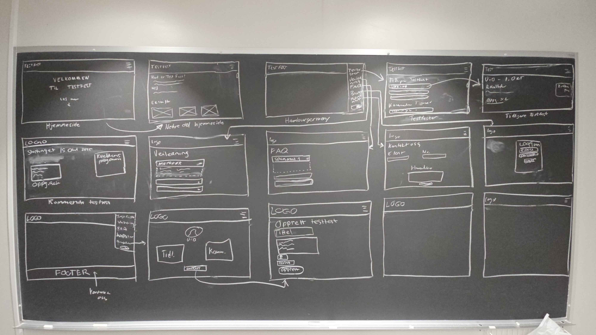
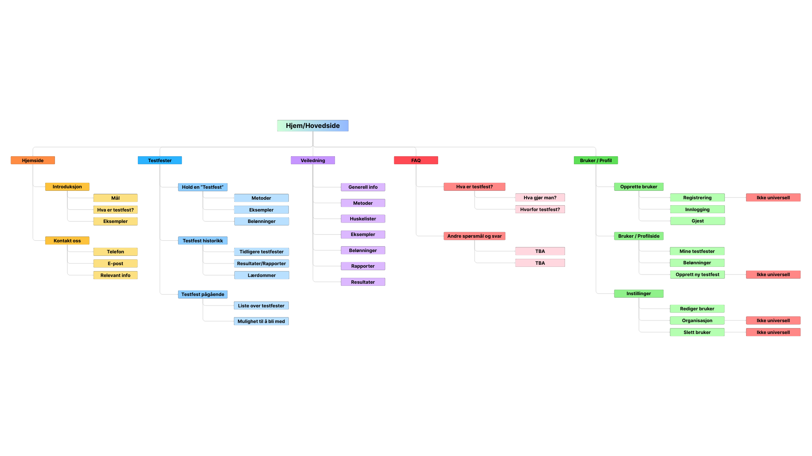
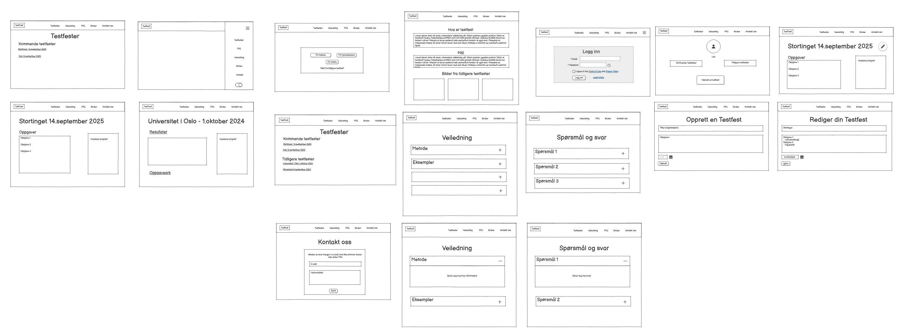
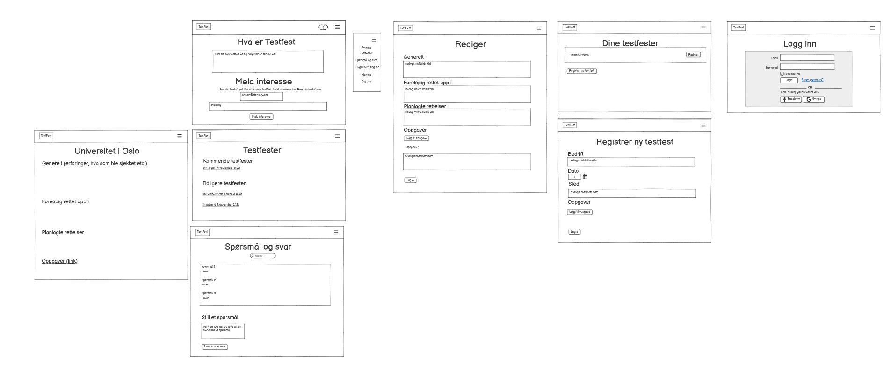

Tingtun er et norsk teknologiselskap basert i Lillesand, som utvikler digitale løsninger for å gjøre nettinnhold mer tilgjengelig for alle. De samarbeider med både offentlige og private aktører i Norge og internasjonalt, og deltar i prosjekter som fremmer inkludering, tilgjengelighet og grønn teknologi.
Selskapet kombinerer forskning, innovasjon og praktisk utvikling, og tilbyr et tverrfaglig miljø med fokus på teknologi og samfunnsnytte. Eksempler på dette kan være Tingtun Termer, som hjelper brukere med å forstå og oversette tekst, og Accessibility Checker, som hjelper organisasjoner med å gjøre nettsider og dokumenter tilgjengelige.
“Målet med Testfestene er å komme sammen i en trivelig ramme for finne, forstå og fjerne feil på nettsider” (Testfest.no, 2025). Testfestene har allerede bidratt til at Arbeidstilsynet, Oslo kommune, NHN, og Storebrand har funnet og fjernet flere feil og i 2024 gjennomførte de fem Testfester i Oslo og Trondheim.
Gruppen sin arbeidsoppgave er å utvikle en ny versjon av nettsiden ‘testfest.no’ fra bunnen ved bruk av mer moderne teknologi og universell utforming. Målet er å dele hva TestFest er og hvordan de fungerer, men også å gjøre det enklere for produkteiere og testere å samhandle og samarbeide på Testfester.
Innenfor dette, arbeidsoppgavene inkludere:
Så langt har gruppen jobbet med research rundt Testfester og hvordan de opererer. Etter å ha fått en bedre idé rundt Testfest, begynte vi å jobbe med skisser og wireframes som ville passe til ideen om en ny, moderne nettside for å vise frem Testfest til potensielle brukere og kunder.
Gruppen har hatt flere møter sammen med Tingtun's representant Mikael, og har satt dette som en fast ukentlig hendelse for å holde en aktiv samtale rundt prosjektet og få en bedre forståelse av hva de ønsker. Møtene er veldig nyttige for å få klarhet i krav, forventninger og eventuelle nye ønsker fra Tingtun.
Gruppen har også begynt å utforske teknologier som kan brukes i prosjektet, og startet smått på en modernisering av den nåværende Testfest.no nettsiden.
Det kan også være en mulighet for gruppen til å delta på en testfest i nær fremtid og oppleve hvordan dette foregår i praksis.
For å se bildene i full størrelse, høyreklikk og velg "Open image in new tab" eller "Åpne bilde i ny fane"

Low-fidelity skisser

Navigasjonskart

Wireframes 1

Wireframes 2